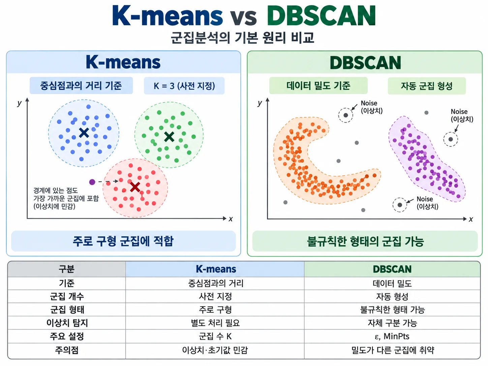

데이터 마이닝(Data Mining)은 데이터에 내재된 패턴, 규칙, 구조 또는 유용한 지식을 탐색하는 과정입니다. 텍스트 마이닝(Text Mining)은 자연어 텍스트에서 의미 있는 정보를 추출하고 분석하는 데이터 마이닝의 응용 영역입니다.
행·열로 체계화된 자료: 관광객 연령, 소비금액, 방문 횟수 등
고정된 표 형식이 아닌 자료: 리뷰, 기사, 이미지, 동영상 등
핵심 용어 8개의 정의와 관광 분석 사례를 아래 표에서 한눈에 비교합니다.
| 번호 | 한국어 | English | 핵심 의미 · Definition | 관광 분야 사례 · Tourism Example |
|---|---|---|---|---|
| 01 | 분류 | Classification | 정해진 범주 예측 | 관광객 리뷰를 사전에 정의한 긍정·부정 범주로 자동 분류 |
| 02 | 군집분석 | Clustering | 유사 데이터 그룹 형성 | 관광객의 방문 빈도·지출액·여행 목적에 따라 유사 고객군 발견 |
| 03 | 연관규칙 | Association Rule Mining | 함께 출현하는 항목 간 규칙 발견 | 관광상품 구매 기록에서 숙박권 구매와 렌터카 예약의 동반 구매 패턴 탐색 |
| 04 | 예측 | Prediction | 미지의 값 또는 결과 추정 | 과거 방문객 수·계절·휴일 자료를 이용해 다음 달 관광 수요 예측 |
| 05 | 문서 군집화 | Document Clustering | 문서 간 유사성을 이용한 그룹 형성 | 관광 리뷰 원문을 수치 벡터로 변환해 유사한 후기끼리 묶기 |
| 06 | 토픽모델링 | Topic Modeling | 문서 집합의 잠재 주제 발견 | 관광 뉴스 기사에서 지역축제·교통·친환경 관광 등 잠재 주제 추출 |
| 07 | 감성분석 | Sentiment Analysis | 텍스트의 긍정·부정 등 분석 | 호텔 후기에서 객실 청결은 긍정, 대기시간은 부정으로 분석 |
| 08 | 텍스트 벡터화 | Text Vectorization | 텍스트를 수치 벡터로 변환 | 관광 리뷰를 TF-IDF 또는 문장 임베딩 벡터로 변환해 군집분석 입력값으로 활용 |
① K개 중심점 초기화 → ② 각 점을 가장 가까운 중심점에 배정 → ③ 군집별 중심점 갱신 → ④ 수렴할 때까지 반복. 기본 K-means는 군집 내 제곱거리 합을 최소화합니다.
DBSCAN은 Density-Based Spatial Clustering of Applications with Noise의 약자로, 한국어로는 잡음을 고려한 응용 데이터의 밀도 기반 공간 군집화라고 풀이할 수 있습니다. 머신러닝의 비지도학습(Unsupervised Learning)에 속하는 군집분석 알고리즘입니다.
① 반경 ε와 최소 점 개수 MinPts 설정 → ② 핵심점(Core Point) 식별 → ③ 밀도 연결성을 따라 군집 확장 → ④ 경계점(Border Point)·이상치(Noise) 구분.
두 알고리즘의 특성을 보여주는 강의용 개념도입니다. 아래 점들은 실증 데이터가 아닙니다.

DBSCAN = Density-Based Spatial Clustering of Applications with Noise
잡음(이상치)을 고려한 밀도 기반 공간 군집화 · 비지도 머신러닝
이 채팅에서 처음 소개했던 DBSCAN 원리 그림을 원래의 군집 배치와 색상으로 수록했습니다.
밀집된 데이터는 같은 군집으로 묶고, 주변에 충분한 데이터가 없는 점은 이상치(Noise)로 분류하는 개념도
한 데이터 주변에서 이웃을 탐색하는 거리
밀집된 영역이라고 판단하기 위한 최소 데이터 수
핵심점(Core Point): 반경 ε 이내에 자신을 포함한 데이터 점이 MinPts개 이상 존재하는 점입니다. DBSCAN은 핵심점 사이의 밀도 연결성을 따라 군집을 확장하며, 경계점과 이상치를 구분합니다.
※ 그림은 설명을 위한 개념도이며 실제 ε 및 MinPts로 계산한 군집 결과가 아닙니다.
세 개의 군집(K=3)을 사전에 정해 중심점과의 거리로 데이터를 배정합니다.
밀집된 영역을 군집으로 식별하며, 군집과 연결되지 않은 점을 이상치로 구분할 수 있습니다.
| 구분 | K-means | DBSCAN |
|---|---|---|
| 기준 | 중심점과의 거리 | 데이터 밀도 |
| 군집 개수 | 사전 지정 | 자동 형성 |
| 군집 형태 | 주로 구형 | 불규칙한 형태 가능 |
| 이상치 탐지 | 별도 처리 필요 | 자체 구분 가능 |
| 주요 설정 | 군집 수 K | ε, MinPts |
| 주의점 | 이상치·초기값 민감 | 밀도가 다른 군집에 취약 |
| 구분 | 문서 군집화 | 토픽모델링 |
|---|---|---|
| 초점 | 문서 간 유사성 | 잠재 주제 구조 |
| 대표 방법 | K-means, DBSCAN, HDBSCAN | LDA, NMF 등 |
| 일반적 결과 | 문서별 군집 배정 | 토픽별 단어·문서 토픽 비중 |
| 주의점 | 거리·안정성 | 토픽 수·해석 가능성 |
A Density-Based Algorithm for Discovering Clusters in Large Spatial Databases with Noise ↗
공간 데이터베이스에서 밀도 기반 군집과 이상치를 탐색하는 DBSCAN을 제안했습니다.
A Comparison of Document Clustering Techniques ↗
K-means, Bisecting K-means, 계층적 군집분석을 비교했습니다.
Exploration of Topic Classification in the Tourism Field with Text Mining Technology ↗
관광 분야 학술논문 초록 5,783개에 TF-IDF 및 계층적 K-means를 사용해 6개 연구 주제 군집을 도출한 연구입니다.
Tourist Preference Analysis Based on Google Reviews Using the DBSCAN Method ↗
관광지 Google Reviews 9,800건을 TF-IDF와 DBSCAN으로 분석했습니다. 보고된 설정(ε=0.8, MinPts=4)에서 주요 군집 9,353건과 이상치 447건을 확인했습니다.
숙박·음식·교통 등 관광 경험과 관련된 리뷰의 유사성을 분석하고 예외적인 리뷰를 탐색합니다.
관광 정책·산업·지역관광 담론을 뉴스 기사 유사성에 따라 탐색합니다.
초록·키워드·논문 내용을 군집화해 연구 분야의 하위 영역을 발견합니다.
관광객의 설문 변수를 군집화하는 방식과 리뷰 문서를 군집화하는 방식은 분석 단위가 다릅니다.
교육용 가상 사례 · 설명용 리뷰 3건 → 본 실습 100~500건
| 리뷰 원문 | 주요 키워드 | 관광서비스 속성 | 감성 |
|---|---|---|---|
| “호텔 직원들이 매우 친절했고 객실도 깨끗했어요.” | 직원·친절·객실·깨끗 | 숙박·서비스 | 긍정 |
| “지역 음식은 맛있지만 식당에서 오래 기다렸어요.” | 음식·맛·식당·대기 | 음식·서비스 | 긍정·부정 혼합 |
| “관광지까지 이동하는 버스 배차간격이 너무 길어요.” | 관광지·버스·배차간격 | 교통·접근성 | 부정 |
위 분류는 연구자의 교육용 해석이며 알고리즘 실행 결과가 아닙니다. 감성분석과 키워드 분석이 먼저 이루어지는 이유를 이해하는 데 사용합니다.
| 가상 군집 | 리뷰 수 | 예시 대표 단어 | 연구자의 해석 |
|---|---|---|---|
| 군집 A | 180건 | 객실·청결·직원·친절 | 숙박 및 서비스 경험 |
| 군집 B | 140건 | 음식·식당·가격·대기 | 외식 경험 |
| 군집 C | 180건 | 버스·이동·교통·주차 | 교통 및 접근성 |
“군집 수 K를 3으로 지정하면 어떤 리뷰들이 서로 가까운가?”
군집 수가 사전 지정되고 데이터는 가까운 중심점에 배정됩니다.
“어떤 리뷰들이 충분히 밀집되어 있고 어느 리뷰가 Noise인가?”
ε·MinPts 및 거리 척도 설정에 따라 군집과 이상치가 달라집니다.
정답: 숙박·서비스. 객실·청결·직원 친절이 주요 내용입니다.
정답: 긍정·부정 혼합. 음식 맛은 긍정, 대기시간은 부정입니다.
정답: 이상치(Noise)로 분류될 수 있습니다. 단, Noise가 반드시 중요하거나 독특한 문제를 뜻하지는 않습니다.
강의 핵심 문장: “K-means는 중심점과의 거리로 데이터를 묶고, DBSCAN은 데이터가 밀집된 영역에서 군집을 형성합니다. 두 기법을 텍스트에 적용하려면 먼저 문서를 수치 벡터로 변환해야 합니다.”
| 검토 항목 | 논문에서 명시할 사항 |
|---|---|
| 분석 단위 | 문서, 리뷰, 이용자, 키워드 중 무엇을 군집화했는가? |
| 텍스트 표현 | 전처리, TF-IDF 또는 임베딩 모델의 구체적 설정 |
| 거리 | 유클리드, 코사인 등 선택 기준 |
| 하이퍼파라미터 | K 또는 ε·MinPts 설정 근거 |
| 품질 확인 | 군집 규모·내적 평가·안정성·대표 문서 확인 |
| 해석 | 군집명은 실제 문서와 특징어에 근거해 부여 |
| 일반화 | 수집 기간·플랫폼·언어·편향 설명 |
이 문장은 예시이며 실제 수행한 분석의 방법·설정값·검증 절차로 구체화해야 합니다.
| 문헌 | 원 연구 맥락 | 활용 |
|---|---|---|
| Ester et al. (1996) | 공간 데이터베이스의 밀도 기반 군집 | DBSCAN 원리 설명 |
| Steinbach et al. (2000) | 문서 군집 알고리즘 비교 | 분석방법 비교 근거 |
| Chang et al. (2022) | 관광 학술논문 초록 분석 | 관광 분야 직접 적용 |
| Qori’atunnadyah et al. (2025) | 관광지 Google 리뷰 분석 | DBSCAN 응용 사례 |